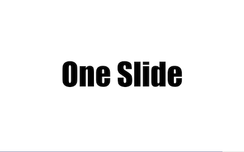

编辑文本内容
主题与动效
下载PDF
关于作者
编辑
点此上传jpg,png,bmp,gif(图片不超过2M)
保存
主题特效
主题
beige
black
blood
league
moon
night
serif

simple
sky
solarized
white
转场
滑动
淡化
凸出
凹陷
缩放
无
对齐
居中
左上
下载PDF
铛铛新页面！Control + P 快捷键助你快速导出！
buuoltwo©2020